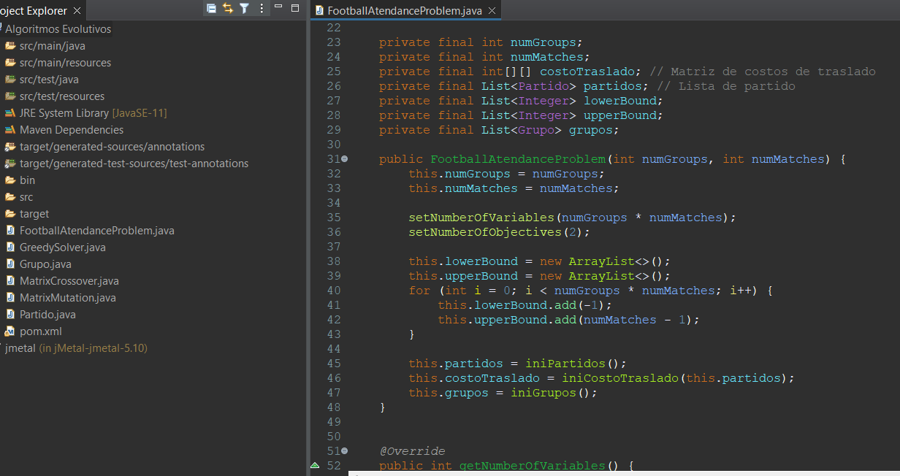
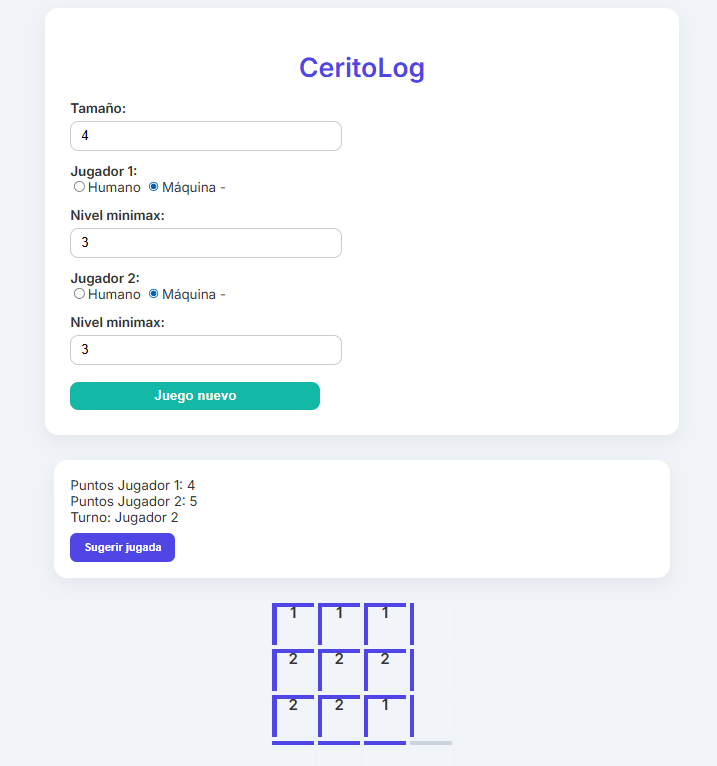
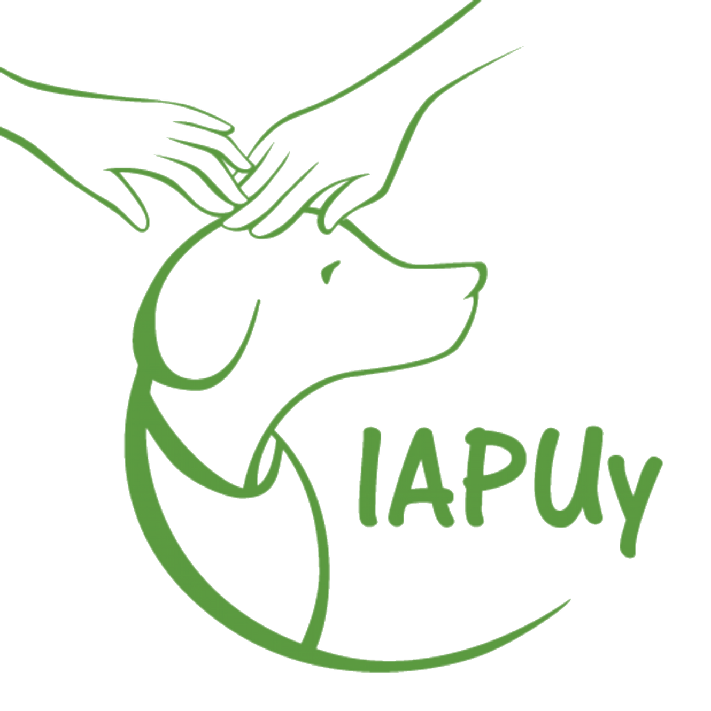
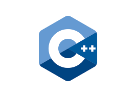
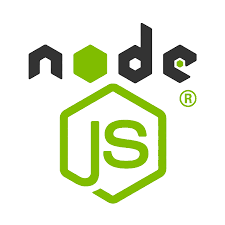
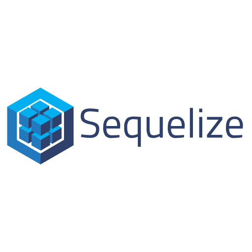
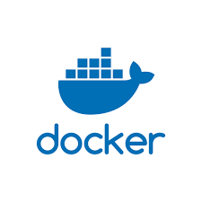
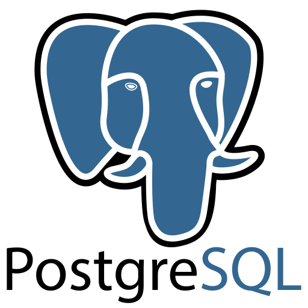
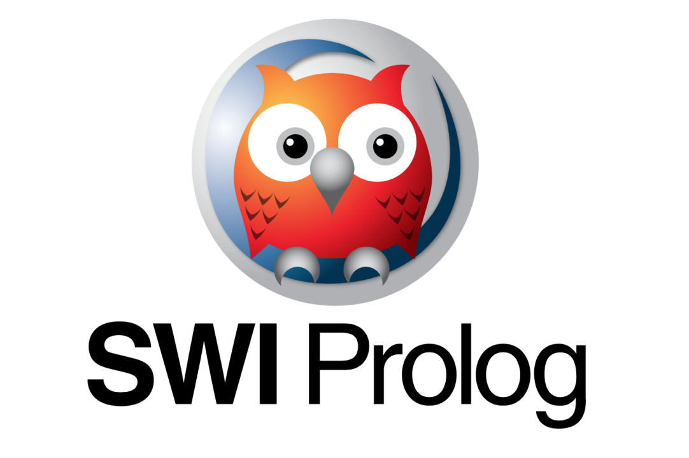
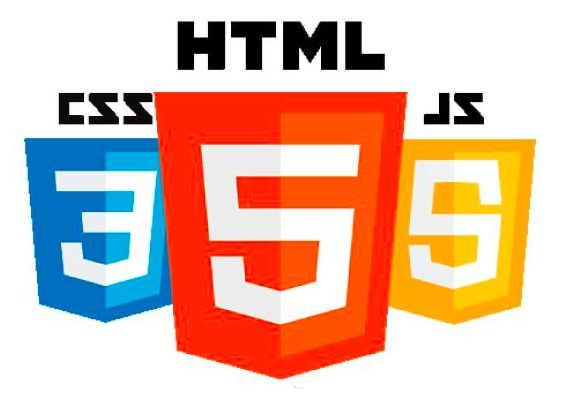

TrabajoUY
Plataforma digital de vinculación laboral, cuenta con página web como con aplicación de escritorio con JSwing
Java
Java Swing
HTML/CSS/JS
Analista en computación y estudiante avanzado de Ingeniería en Computación en Facultad de Ingeniería UDELAR
Soy estudiante avanzado de Ingeniería en Computación, actualmente terminando el quinto año de la carrera. A lo largo de mi formación académica he desarrollado una sólida base en programación, poniéndola en práctica en proyectos académicos y profesionales.
Me apasiona la tecnología y tengo un fuerte interés en el desarrollo fullstack con un enfoque en robustez, claridad y experiencia de usuario. Trabajo con tecnologías modernas como React, Next.js, Node.js y Docker para construir soluciones escalables y mantenibles. Estoy abierto a explorar nuevas tecnologías, metodologías de desarrollo y todo aquello que contribuya a mejorar mi perfil técnico.
Cuento con formación en Machine Learning y Data Science aplicado con Python, con experiencia práctica en el diseño y entrenamiento de modelos supervisados y no supervisados: regresión lineal y logística, SVM, árboles de decisión, Random Forests, clustering (KMeans, DBSCAN) y redes neuronales artificiales. He trabajado en casos reales como detección de fraude bancario, clasificación de malware y detección de noticias falsas, aplicando técnicas de procesamiento de datos, construcción de pipelines, evaluación de modelos y reducción de dimensionalidad con PCA. Mi perfil como desarrollador fullstack me permite no solo construir modelos, sino integrarlos en aplicaciones web funcionales y escalables, aportando valor en todo el ciclo: desde el dato crudo hasta el producto final. Asimismo, cuento con el Cambridge First Certificate (FCE), que respalda mis conocimientos de inglés y me permite comunicarme con fluidez en entornos técnicos y profesionales.


Una selección de mis trabajos más destacados
Plataforma digital de vinculación laboral, cuenta con página web como con aplicación de escritorio con JSwing

Proyecto de la materia algoritmos evolutivos para planificar Asistencia a Partidos de un Mundial de Fútbol

Inteligencia artificial y backend del juego de los "ceritos" usando Programación Lógica.

Plataforma web de gestión - en desarrollo

Clientes y Servidores - Routers - Laboratorio de Redes de Computadoras
Agente de Reinforcement Learning entrenado para jugar al Truco Uruguayo en consola. Implementa Q-Learning con una representación de estado del juego, aprendiendo estrategias de canto, envido y juego de cartas de manera autónoma.
Tecnologías y herramientas que domino









Contacta conmigo, estaré encantado de poder ayudarte